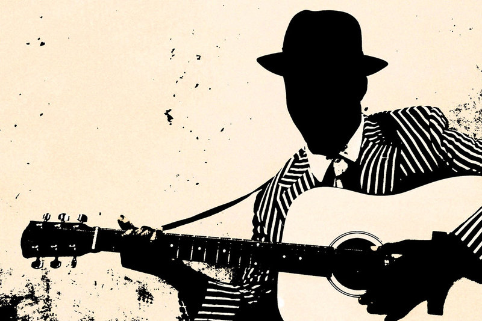

World of Music
World of MusicИстория Блюза
 Возник во второй половине XIX века в афроамериканском сообществе Юго-востока США, в среде выходцев с плантаций «Хлопкового пояса». С тех пор в литературных произведениях фразу «Blue Devils» часто используют для описания подавленного настроения. Блюз сложился из таких её проявлений, как рабочая песня, холлер, выкрики в ритуалах африканских религиозных культов — ринг-шаут, спиричуэлс (христианские песнопения), шант и баллады. Большинство исполнителей блюза до старости продолжали работать на разного рода низкооплачиваемых работах (на плантациях, строительстве речных дамбах и дорог), как и практически всё чёрное население США в первой половине XX века. Они бродяжничали по стране, перебиваясь случайными заработками, сохраняя при этом личную независимость, готовые в любой момент продолжить свои скитания. Иногда удавалось устроиться играть на вечеринках и в джук-джойнтах, где музыканту редко платили деньгами, а чаще — едой и выпивкой. Таков был характерный стиль жизни исполнителя блюза: тяжёлый физический труд и скудный заработок. Но гитара была рядом всегда, и можно было часто услышать блюз в любом месте: на углу улицы, в вагоне товарного поезда.Основные направления блюза
Классический блюз
В нём утвердились характерные особенности, унаследованные от музыки афроамериканцев, и чётко определилась 12-тактовая форма и гармоническое сопровождение.
Ритм-н-блюз
Ритм-н-блюз получил широкое распространение во времена Второй мировой войны. Можно отметить двух ведущих исполнителей этого периода Джо Тёрнера и Джимми Рашинга. Джо Тёрнер был знаменит своими быстрыми блюзами, которые он не столько пел, а как бы кричал на фоне энергичного фортепианного аккомпанемента в стиле «буги-вуги».
Британский блюз
В 1960-х в Британии под влиянием американских блюзовых и рок-н-ролльных записей возникла череда местных исполнителей блюза, которые во время британского вторжения попали в американские чарты и получили мировую известность, в их числе The Rolling Stones, The Yardbirds.
В Блюзе, как и в Классической музыке или Джазовой музыке очень сложно выделить какого-то исполнителя как рекомендованного. Есть множество великолепных композиторов и исполнителей, с многими из которых можно ознакомиться в соответствующих плейлистах.
Классический блюз
В нём утвердились характерные особенности, унаследованные от музыки афроамериканцев, и чётко определилась 12-тактовая форма и гармоническое сопровождение.
Ритм-н-блюз
Ритм-н-блюз получил широкое распространение во времена Второй мировой войны. Можно отметить двух ведущих исполнителей этого периода Джо Тёрнера и Джимми Рашинга. Джо Тёрнер был знаменит своими быстрыми блюзами, которые он не столько пел, а как бы кричал на фоне энергичного фортепианного аккомпанемента в стиле «буги-вуги».
Британский блюз
В 1960-х в Британии под влиянием американских блюзовых и рок-н-ролльных записей возникла череда местных исполнителей блюза, которые во время британского вторжения попали в американские чарты и получили мировую известность, в их числе The Rolling Stones, The Yardbirds.